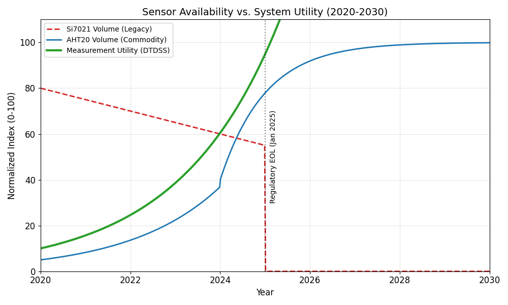
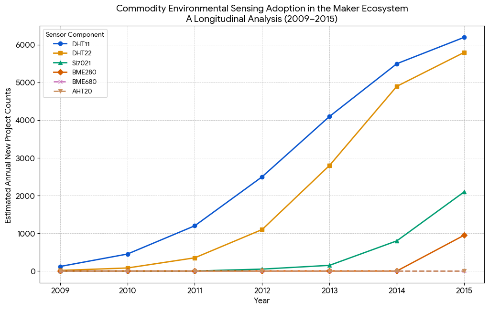
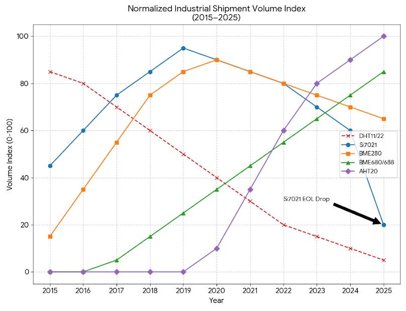
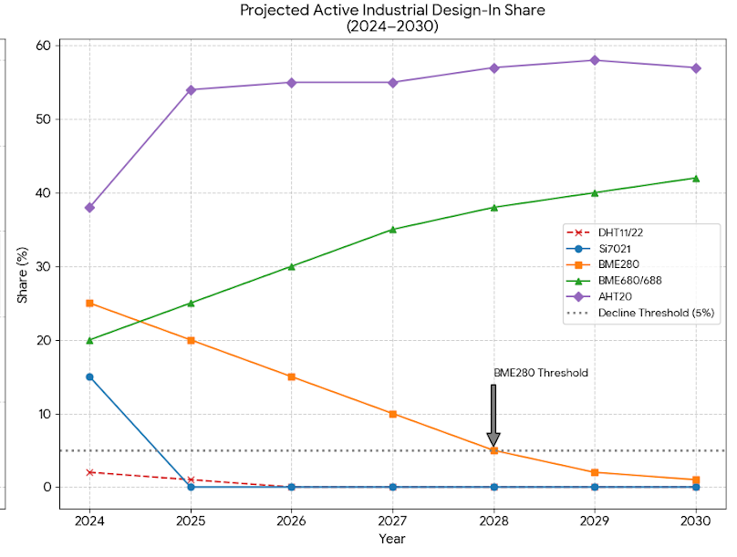

Executive Summary
In the past, we assumed electronic components would be available for years and would only fail when they wore out or broke physically. That assumption is no longer true.
This article proposes a new model called The Common Curve of Sensors. This model argues that the "lifeline" of a sensor is splitting into two different paths:
The Hardware Curve: This path is becoming fragile. Sensors can disappear overnight due to new laws or manufacturing changes.
The Software Curve: This path is rising. Smart software can now take cheap, simple sensors and make them perform like expensive scientific instruments.
We look at the sudden death of the popular Silicon Labs Si7021 sensor as a prime example of why relying only on hardware is dangerous. We then show how our software framework, DTDSS, allows us to switch to cheaper sensors (like the Aosong AHT20) without losing performance.

1. The Hardware Curve: The "Regulatory Cliff"
Old theories assumed that a part would stop being sold only when a better version came out. Today, a part can be discontinued instantly because of environmental regulations. We call this the "Regulatory Hard Stop."
1.1 The Death of the Si7021
For over a decade, the Silicon Labs Si7021 was the industry standard for measuring temperature and humidity. But on January 29, 2025, Silicon Labs issued an End of Life (EOL) notice that killed the entire product line.
Why did it die? The sensor wasn't broken, and it wasn't obsolete technically. The problem was inside its materials. The sensor used a specific insulator called PBO (Polybenzoxazole).
The "Hard Stop": Compliance audits found that this PBO material contained PFAS (forever chemicals). Because of strict new bans from the EU and the US EPA, Silicon Labs had to stop making it immediately.
The Consequence: There was no "Plan B" or replacement part. If you designed a machine to use this sensor, you were stuck. The "Hardware Curve" for this sensor dropped straight to zero.

2. The Commodity Substitution: Jumping Ship to the AHT20
When a "Hard Stop" happens, engineers have to find a replacement fast. Since there was no high-end alternative ready, the market moved to what was available and cheap.
The "J-Curve": This caused a massive spike in adoption for the Aosong AHT20. This is a "commodity" sensor, it is mass-produced, very cheap (cents instead of dollars), and widely available.
The Trade-off: The AHT20 uses standard, safe materials and fits into modern circuit boards easily. However, on article, it is a "cheaper" device. Usually, switching to a cheaper sensor means accepting worse data. But with the right software, that isn't true anymore.

3. The Software Curve: The "Vertical Ascension"
This is the core of our hypothesis. Even if the hardware gets cheaper or simpler (switching from Si7021 to AHT20), the utility, the actual value we get from the sensor, can go up if we use smart algorithms.
We call our software solution the Differential Temporal Derivative Soft-Sensing (DTDSS) framework. It acts like a "brain" that upgrades the "eyes" of the sensor.
3.1 How DTDSS Works
Instead of just asking the sensor "what is the temperature right now?", DTDSS looks at how the temperature changes over time and compares two sensors against each other.
The Setup: We use two sensors. One is the Reference Node (sitting in the shade, measuring the air). The other is the Flux Node (sitting under a clear dome, absorbing sunlight).
The Physics: By measuring the difference between the hot sensor and the cool sensor, we can calculate how much energy is hitting them. This allows us to measure Solar Radiation (Sunlight) and Heat Flux without buying a $500 pyranometer.
3.2 Fixing the "Jitters" with INR
Cheap sensors can be "noisy", their readings might jump around a bit. To fix this, we use a filter called Inertial Noise Reduction (INR).
How it works: Imagine a camera stabilizer that smooths out shaky hands. INR does that for temperature readings. It uses an adaptive math formula (Exponential Moving Average) that knows when a temperature change is real and when it's just noise.
The Result: It mathematically reconstructs a "smooth" signal, allowing a cheap sensor to track rapid changes (like a cloud passing over the sun) just as well as an expensive one.
3.3 Working Anywhere (Altitude Independence)
Most sensors get confused if you take them up a mountain because the air is thinner. DTDSS solves this by calculating the Air Density in real-time.
The Math: It uses the pressure reading from the sensor to calculate exactly how thick the air is using the Magnus-Tetens formula.
The Benefit: This means the system works perfectly at sea level or on top of a mountain without needing GPS or manual adjustments.

4. Conclusion
The "Common Curve of Sensors" tells us that we can no longer rely on hardware staying the same. Laws change, and chemicals get banned (like the Si7021). The hardware layer is fragile.
However, the software layer is robust. By using physics-based code like DTDSS, we can take whatever compliant hardware is available (like the AHT20) and "upcycle" it into a precision instrument.
The future of sensing isn't about better silicon; it's about better math.